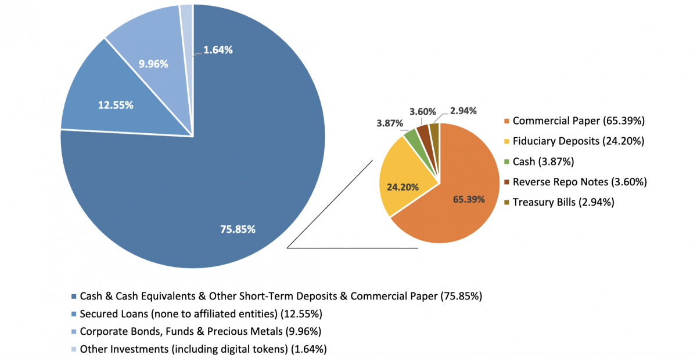
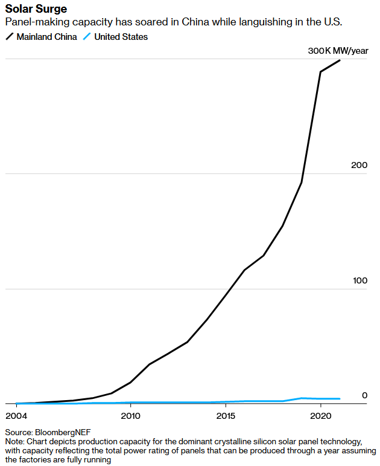

Delivered on 05 July 2021 by Justin Pyvis. About a 3 min read.
Before we get into the latest example of overlawyering in the US, some housekeeping: this will be the last ever EconByte newsletter. I'm going to archive a static version of the website but there will be no new content or emails from now on.
The main reason for the retirement is that I'm now publishing on a separate platform 5 days a week: Brekky Wrap. It has more of an Australian focus but there's also plenty on global markets and technology that should interest even those who couldn't care less about what's happening down under. It's digestible in just a few minutes and is also free, so if you haven't already done so feel free to sign up.
Another reason for closing this down is that I want to experiment with other mediums and spend more time working on a book (tbc). For now, I've set up a WriteFreely instance on the fediverse – called Detrended – which will have more of an ad hoc publishing schedule and no emails. You can keep up with posts there using any RSS/Atom reader or by following it on the fediverse.
Anyway, on to the final issue.
Last week, a judge unsanctimoniously dismissed the US Federal Trade Commission's (FTC) antitrust lawsuit against Facebook:
The FTC's Complaint says almost nothing concrete on the key question of how much power Facebook actually had, and still has, in a properly defined antitrust product market. It is almost as if the agency expects the Court to simply nod to the conventional wisdom that Facebook is a monopolist.
The judge also dismissed a separate case attempting to divest Facebook of WhatsApp and Instagram, signed by nearly every state attorney general, "holding that a specific civil law doctrine prevented the coalition from challenging acquisitions settled so many years in the past".
You would think that criticism as scathing as that might be enough to deter even the most fervorous antitrust zealots. But that's unlikely given that President Biden recently appointed Lina Khan to chair the FTC, a 32-year old law professor specialising in antitrust "who made her reputation as a critic of tech giants". The judge also made it clear that the FTC can revive its case by 29 July, if it's able to "plead enough facts to plausibly establish" that Facebook is violating antitrust laws, "namely, that Facebook has monopoly power in the market for Personal Social Networking Services".
That said, I'm not sure if the FTC will bother trying to fight this antitrust case, mostly because I don't think it can. Facebook just doesn't have a monopoly, as it has historically been defined. It doesn't charge consumers (where's the consumer harm?), doesn't collect monopoly rents (even in advertising), doesn't restrict supply and can't increase prices for users or advertisers without fear of competition.
Do "network effects" make it more difficult to leave Facebook? Absolutely. But that doesn't make Facebook a monopoly any more than it made MySpace a monopoly. If a better rat trap comes along, you can be sure people will switch to it. Facebook is dominant because people like it, not because it's the only social network in town.
Now that doesn't mean the FTC will give up. No, you can be sure that the FTC will have tunnel vision for Big Tech until the end of Khan's term. Amazon is so concerned that last week it asked a judge that she be recused from all Amazon-related antitrust cases before the agency, as she apparently:
...has on numerous occasions argued that Amazon is guilty of antitrust violations and should be broken up. These statements convey to any reasonable observer the clear impression that she has already made up her mind about many material facts relevant to Amazon's antitrust culpability as well as about the ultimate issue of culpability itself.
While any sensible judge will throw out Big Tech antitrust claims as the law is currently written, there's a good chance that the Biden administration will try to change the law. Early in June US House Democrats unveiled five separate bills aimed at Big Tech, and Biden has signalled his intentions not just with the appointment of Khan but also Tim Wu, "a critic of anticompetitive conduct by Big Tech companies, as his special advisor for technology and competition policy".
How this plays out will be incredibly important. Productivity is essential for growth, and you only get that through increased savings or innovation. While there's no doubt regulation could help improve things on many margins, there's also a gigantic risk that any new laws are ill-conceived, poorly written or outright captured by Big Tech, unleashing unintended consequences that could suffocate the most vibrant sector in the United States.
Delivered on 28 June 2021 by Justin Pyvis. About a 2 min read.
Eric Rosengren, President of the Federal Reserve Bank of Boston, last week singled out Tether – a so-called stablecoin pegged 1:1 to the US dollar – as posing "financial stability challenges":
The reason I talked about Tether and stablecoins is if you look at their portfolio, it basically looks like a portfolio of a prime money market fund but maybe riskier... [it] has a number of assets that, during the pandemic, the spread got quite wide on those assets. ... I do think we need to think more broadly about what could disrupt short term credit markets over time, and certainly stablecoins are one element. I do worry that the stablecoin market that is currently, pretty much unregulated as it grows and becomes a more important sector of our economy, that we need to take seriously what happens when people run from these type of instruments very quickly.
Created in 2014, Tether's primary function is to provide liquidity to cryptocurrency exchanges and facilitate decentralised finance – 'DeFi'. According to asset manager NYDIG and cited by JPMorgan, around 50%-60% of bitcoin has traded for USDT ('tether') since 2019. It has a market cap of approximately $US62.5 billion, which would rank it in the mid-30s in terms of the world's largest banks by market capitalisation (somewhere between the National Australia Bank and the Australia and New Zealand Banking Group), but hasn't produced a single independent audit. Its balance sheet is essentially a black box – 'trust us'.
The only information anyone has about Tether (outside of its 11 employees – not a typo!) is what is published on its website. Again, it's all completely unaudited.
Tether's asset breakdown.
As usual with these sorts of things, caveat emptor applies: buyer beware! Even if Tether's disclosures are true (and it hasn't engaging in fractional-reserve banking to manipulate crypto prices, as some speculate), that would still mean 49.6% of its assets are in "commercial paper", with just 3.87% in cash.
That leaves Tether very exposed to market gyrations – what happens if there's a corporate bond crisis in the US, prices tank and people try to redeem their tether at the same time? Simple: Tether becomes insolvent and implodes, much like Bernie Madoff's infamous 20-year Ponzi scheme only unravelled during the global market downturn in 2008.
But the issues with Tether don't apply to all stablecoins. Circle's USD Coin ('USDC'), for example, is fully backed by US fiat and is publicly audited by accounting firm Grant Thornton every month. It has been snatching market share from Tether as doubts about the latter's solvency have grown, especially after the state of New York found it guilty of "overstating reserves [and] hiding approximately $850 million in losses around the globe".
If Tether is indeed some kind of Ponzi scheme, it will eventually blow up. Will it disrupt the broader crypto market? Absolutely. But it's unlikely to pose "financial stability challenges".
However, what is clear is that cryptocurrencies and so-called stablecoins in particular will be facing increased regulatory scrutiny in the coming months. And that's a good thing, provided it's done right – in the long run, a more mature, open and robust crypto market will only help it grow.
Delivered on 21 June 2021 by Justin Pyvis. About a 3 min read.
Over 800 suspected criminals were arrested across the world earlier this month "after being tricked into using an FBI-run encrypted messaging app". The plot was concocted back in 2018 while Australian authorities and the FBI were knocking back a few cold ones (no doubt celebrating Australia's new Telecommunications and Other Legislation Amendment (Assistance and Access) Bill 2018), "when they hatched a plan to exploit the communications network for their own ends: by surreptitiously taking control of AN0M and using it as window into criminal activities".
"I wasn't there," Australia's federal police commissioner Reece Kershaw told reporters on Tuesday, "but as you know some of the best ideas come over a couple of beers."
The full details, for obvious reasons, are scant. But the fact that Australian authorities were heavily involved is probably because it has the worst digital privacy laws in the world. The Assistance and Access Bill 2018 cited above allows authorities to compel individuals or companies to do one or more specified 'acts or things' necessary to assist agencies, without judicial oversight.
While the Assistance and Access Bill 2018 has never been used for anything terrorism related (the original justification for the bill), the Australian Federal Police (AFP) confirmed that the global sting was only possible because of it, although it was "not in a position to elaborate further due to legislative requirements within the relevant acts".
Should we care that a bunch of criminals were busted by an elaborate honeypot? No. This isn't the first time the US government has built a product from the ground up with the aim of spying on criminals and foreign governments: Crypto AG, a Swiss communications and information security company that operated from 1970 until 2018, was created by the CIA to sell backdoored products.
Indeed, the stupidity of these so-called crime bosses is staggering:
Ayik is the founding member of the "Aussie Cartel" – a syndicate formed by some of Australia's most wanted crime bosses that smuggles an estimated $1.5 billion AUD worth of drugs into the country each year – and is currently Australia’s most wanted priority target. He recommended AN0M to criminal associates, who would purchase mobile devices that had been preloaded with the app on the black market.
These phones could not make calls or send emails, and could only send messages to another device that had the same app, according to a statement by the AFP. Criminals needed to know a criminal to get a device. They would then use the encrypted messaging software to send messages, distort messages and take videos.
High-profile organised crime figures vouched for the app’s integrity – and by the time authorities swooped more than 10,000 people were using AN0M devices across the world, including more than 1,600 in Australia.
Encryption is trustworthy. Random, invite-only closed source apps are not. You would think that given their threat model, hardened criminals might at a minimum use something that has had its source code audited by a trusted party. Better yet, a messaging app that's completely open source. Or keep it simple by using PGP with a key they themselves created and distributed. It would literally take a minute to set up.
The fact that these 'high-profile organised crime figures' vouching for the app's integrity blindly trusted a secretive, closed-source app suggests they would probably have been caught eventually anyway.
But what we should care about is Australia's involvement in all of this. The laws used to arrest a few hundred suspected criminals (the first 50 'beta testers' were already under surveillance) "have undermined international trust in Australia's digital services and their cybersecurity, increased business uncertainty, and hurt the brand image of Australian providers internationally", with costs "measurable in the multiple billions of dollars".
According to Digital Rights Watch executive director Lucie Krahulcova:
It seems the FBI would not have been able to conduct this operation without the AFP. And that's because we have essentially one of the most invasive, most broad anti-encryption legislation in the world right now.
Law Council of Australia president Jacoba Brasch QC said that under the Assistance and Access Bill 2018, there is "no judicial involvement in the issuing process for orders compelling communications providers to render assistance".
You can be sure that following the success of this honeypot (which only came to an end after a blogger did some analysis on a device and revealed it to be a scam), every country in the world will soon be knocking on the AFP's door trying to get some judicial-free, backdoor surveillance action (well maybe not China).
The message from Australia's politicians is clear: if you want to start a digital company and need any kind of data security or user privacy, do not do it in Australia, a place where individual and enterprise trust in digital services no longer exists.
Delivered on 14 June 2021 by Justin Pyvis. About a 3 min read.
The Basel Committee on Banking Supervision is gearing up to regulate banks that hold cryptocurrency, as "the growth of crypto assets and related services has the potential to raise financial stability concerns and increase risks faced by banks". Unfortunately its proposed regulations completely miss the mark. According to the FT:
All other [non-stablecoin] crypto assets, including bitcoin and ethereum, would go into the new, more strenuous regime. The Basel committee proposed a risk weight of 1,250 per cent, in line with the toughest standards for banks' exposures on riskier assets.
That would mean banks would in effect have to hold capital equal to the exposure they face, and be prepared if the value of the asset were worthless. A $100 exposure in bitcoin would result in a minimum capital requirement of $100, Basel said.
The standards would apply to assets created for decentralised finance (DeFi) and non-fungible tokens (NFTs), but potential central bank digital currencies were outside the scope of the consultation, it added.
I get that the regulator is concerned about stability, but the effect of these capital requirements will be to kick crypto to the curb – including the very promising DeFi – where it will be embraced by non-bank entities.
We've seen how excessive regulation can lead to growth in problematic shadow banking – well soon we may see a growing shadow crypto sector. A far better approach would be to update the rules to incorporate crypto, rather than kneecap it to the point that the only place it can thrive is outside of the traditional banking system.
There is a legitimate need to develop a proper, global regulatory framework that would allow institutions to access new DeFi services through the banking system. It really shouldn't be that difficult – most cryptocurrencies are actually more traceable than cash, given that they provide an open, immutable record of all transactions.
Then again, if the five Big Tech-busting bills released for review in the US last week are any indication (see below), perhaps proper regulation of crypto is indeed impossible.
Those five antitrust bills
US House Democrats on Friday unveiled five separate bills aimed at breaking up Big Tech. If you were to put several politicians in a room who knew nothing about technology and asked them to devise some new regulations... well this is close to what you would get:
American Choice and Innovation Online Act, to prohibit discriminatory conduct by dominant platforms, including a ban on self-preferencing and picking winners and losers online.
Platform Competition and Opportunity Act, to prohibit acquisitions of competitive threats by dominant platforms, as well acquisitions that expand or entrench the market power of online platforms.
Ending Platform Monopolies Act, to eliminate the ability of dominant platforms to leverage their control over across multiple business lines to self-preference and disadvantage competitors in ways that undermine free and fair competition.
Augmenting Compatibility and Competition by Enabling Service Switching Act, to promote competition online by lowering barriers to entry and switching costs for businesses and consumers through interoperability and data portability requirements.
Merger Filing Fee Modernization Act, to update filing fees for mergers for the first time in two decades to ensure that Department of Justice and Federal Trade Commission have the resources they need to aggressively enforce the antitrust laws.
At least we finally get adefinition out of this. Big Tech (i.e. companies covered by these Acts) are defined as those with 50 million US-based monthly active users, 100,000 US-based monthly active business users, or possessing a market capitalisation of more than $US600 billion. Right now that would include Google, Facebook, Microsoft, Alphabet (the parent company of Google), Amazon, Apple, Netflix and maybe even Snapchat (which has close to 50 million US-based monthly active users). None of the metrics are indexed to population or inflation, meaning over a sufficient period of time they could become all-encompassing.
One important variable that isn't defined is "data", which will be provided "6 months after the date of enactment". So these Acts will go into force, require Big Tech to ensure things such as "all data must be portable", and "enable the secure transfer of data to a user", but not provide a definition of data?!
Not to mention that mandating data portability generally requires an assumption that the current way of doing things is the only way: will some future Facebook competitor be required to ensure its data are portable and interoperable with whatever today's regulators come up with? Surely not, but that's what will happen. The effect will be to lock-in some kind of standard and force every future entrant to comply accordingly, which would likely have the opposite effect to the stated goal: it would help Big Tech maintain its dominance and stymie innovation.
Then there's the effective prohibition on all mergers and acquisitions, with M&A disallowed for any Big Tech company that might "compete with the covered platform... constitute nascent or potential competition to the covered platform... enhance or increase the covered platform operator's market position... or maintain its market position". Really?
There's plenty more nastiness inside each, feel free to read them all here. But essentially a handful of US companies will be regulated differently to every other business – without evidence of consumer harm – in a process that, if passed, will probably destroy many products consumers actually enjoy. 🙄👏
Delivered on 08 June 2021 by Justin Pyvis. About a 3 min read.
The Australian government's attack dog has given itself a big pat on the back for successfully shaking down Google and Facebook with its News Media and Digital Platforms Mandatory Bargaining Code:
Rod Sims, chair of the Australian Competition and Consumer Commission, told the Financial Times on Tuesday that the country's world-first news media bargaining code had forced big technology platforms to the negotiating table to agree deals with publishers.
"We are on track for deals all around. It's been a big success," Sims said in an interview. "We are just about there and the media companies are happy — and that's the key point."
The word "deal" is a generous use of the English language, which defines it as "an arrangement for mutual advantage". These deals are only mutually advantageous to the extent that the legislation allows Australia's Treasurer to arbitrarily "designate a digital platform as being under the news media bargaining code", unless a deal is struck resulting in "no need for designation under the code".
In other words, the costs being "designated" by the Code are so significant that it's in Google and Facebook's interest to agree to a completely one-sided deal to avoid having to "bargain" in the ACCC's kangaroo court. There's a serious lack of transparency: no details of any of the "deals" have been made public, although they're each rumoured to be in the tens of millions.
Essentially Facebook and Google have to pay a secret 'protection fee' to Australia's archaic, highly concentrated media companies or the government will beat them down with a big stick known as the News Media and Digital Platforms Mandatory Bargaining Code. The public is completely in the dark, the media companies are unaccountable to the taxpayer and any potential entrant must now compete against these dinosaurs plus the extra tens of millions of dollars with which they're now being subsidised.
No doubt a lucrative advisory gig at one of the legacy media companies awaits ACCC chair Rod Sims when his term expires in July 2022.
Solar policy and unintended consequences
A few days ago Bloomberg published a good piece summarising the demise of the US solar industry. It's a warning for fans of so-called industrial policy, with good intentions ruined by unintended but entirely predictable consequences.
The [solar] industry failed to take root in the U.S. despite billions of dollars in government incentives and nearly two decades of pledges from presidents, starting with George W. Bush, that the nation would be a clean-energy superpower.

In the early 2000's China was emerging as a major solar competitor to the US. So successive Presidents – before the 'Tariff Man' Donald Trump even came to power – whacked them with tariffs, with Obama raising them "as high as 249%", which... "spurred retaliation instead of a manufacturing renaissance":
Manufacturers responded by moving operations out of China, but they didn't head to the U.S. Instead, large manufacturers skirted the U.S. tariffs by building facilities to assemble solar cells and modules across Southeast Asia.
But it gets better:
Making matters worse, China retaliated by imposing its own duties of up to 57% on imports of U.S.-made polysilicon -- tariffs that crippled U.S. producers of the conductive material used in solar panels.
Instead of affordable, Chinese-taxpayer subsidised solar panels that made "solar as cheap as coal", the US raised the domestic price of solar, did not save the industry, and accidentally managed to kill off its thriving polysilicon industry, going "from making 50% of the world's polysilicon in 2007 to less than 5% today".
Unintended consequences from poorly conceived policy strike again. What's the saying about good intentions again?